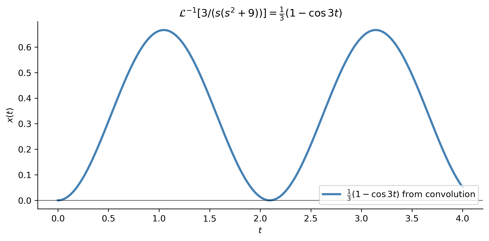

import numpy as npimport sympy as symimport matplotlib as mplimport matplotlib.pyplot as pltfrom scipy.integrate import solve_ivpfrom IPython.display import Math, displaympl.rcParams['figure.dpi'] =150mpl.rcParams['axes.spines.top'] =Falsempl.rcParams['axes.spines.right'] =FalseH =lambda tv, a: np.where(np.asarray(tv, dtype=float) >= a, 1.0, 0.0)
Goals
Understand the convolution\((x * y)(t) = \int_0^t x(\tau)\,y(t-\tau)\,d\tau\) and compute it directly from the definition.
State and apply the convolution property\(\mathcal{L}[x * y] = X(s)\,Y(s)\) to invert products of transforms.
Recognize that \(\mathcal{L}[x(t)\,y(t)] \neq X(s)\,Y(s)\)—the transform of a product is not the product of the transforms.
Use convolution to write the solution of a DE with an arbitrary forcing function as a single integral formula.
Understand the physical motivation for impulsive forcing and the delta function \(\delta_a(t)\).
Define the delta function through the sifting property and compute \(\mathcal{L}[\delta_a(t)] = e^{-as}\).
Solve IVPs with delta-function forcing using Laplace transforms.
Define the transfer function\(K(s)\) and express the forced response as both a convolution and a product.
Note
This material corresponds to Sections 3.3 and 3.4 of Logan (2015).
Section 3.3 — The Convolution Property
Motivation: What Happens to Products?
Recall the additivity property of Laplace transforms: \[
\mathcal{L}[x + y] = X(s) + Y(s).
\]
A natural next question is whether a similar rule holds for products. That is, if \(\mathcal{L}[x] = X(s)\) and \(\mathcal{L}[y] = Y(s)\), what is \(\mathcal{L}[xy]\)?
ImportantWarning
\[\mathcal{L}[x(t)\,y(t)] \neq X(s)\,Y(s).\] The Laplace transform of a product is not the product of the transforms. This is a very common error — Exercise 2 in §3.3 asks you to produce a concrete counterexample.
The correct question to ask is the inverse one: what function has Laplace transform \(X(s)\,Y(s)\)? The answer — which is far from obvious — is the convolution of \(x\) and \(y\).
Definition of Convolution
ImportantDefinition
Let \(x(t)\) and \(y(t)\) be two functions defined on \([0,\infty)\). The convolution of \(x\) and \(y\), denoted \(x * y\), is the function defined by \[
(x * y)(t) = \int_0^t x(\tau)\,y(t - \tau)\,d\tau.
\]
It is sometimes convenient to write the convolution as \(x(t) * y(t)\).
NoteHow to Read the Convolution Integral
To evaluate \((x * y)(t)\) at a fixed time \(t\), you simultaneously:
substitute \(\tau\) for the argument of \(x\), and
substitute \(t - \tau\) for the argument of \(y\) (this “flips and shifts” \(y\)),
then integrate the product from \(\tau = 0\) to \(\tau = t\). As \(\tau\) sweeps from \(0\) to \(t\), you are accumulating a weighted history of \(x\) against a time-reversed copy of \(y\). This weighted-memory structure arises naturally whenever a system’s current state depends on its entire past — exactly the behavior modeled by differential equations with forcing.
The Convolution Property
ImportantTheorem: Convolution Property of Laplace Transforms
If \(\mathcal{L}[x] = X(s)\) and \(\mathcal{L}[y] = Y(s)\), then \[
\mathcal{L}[x * y] = X(s)\,Y(s).
\] Equivalently, in terms of the inverse transform, \[
\mathcal{L}^{-1}[X(s)\,Y(s)] = (x * y)(t) = \int_0^t x(\tau)\,y(t-\tau)\,d\tau.
\]
This property is very useful because when solving a DE we often end up with a product of transforms; we may use this last expression to invert the product.
Verification. The proof uses the multivariable calculus technique of interchanging the order of integration. Starting from the definition of \(\mathcal{L}[x * y]\):
Change the order of integration. The region of integration is \(0 \le \tau \le t < \infty\), equivalently \(0 \le \tau < \infty\) and \(\tau \le t < \infty\):
In general, \((x * y)(t) = (y * x)(t)\), so the operation of convolution is commutative.
This is proved in the exercises (Exercise 5, §3.3) via a change of variables in the convolution integral.
TipPractical Consequence
Because convolution is commutative, you can choose which function to shift when evaluating the integral. Pick whichever arrangement makes the integration simpler. In Example 3.22 below, shifting the constant function \(1\) leads to a much shorter calculation than shifting \(t^2\).
Example 3.22 — Direct Computation of a Convolution
Find the convolution \(1 * t^2\).
Apply the definition with \(x(\tau) = 1\) and \(y(t - \tau) = (t-\tau)^2\):
\(\displaystyle \mathcal{L}^{-1}\!\left[\frac{3}{s(s^2+9)}\right] = \frac{1}{3} - \frac{\cos{\left(3 t \right)}}{3}\)
(a) Verification of Example 3.24. The inverse Laplace transform of \(3/[s(s^2+9)]\) computed symbolically by SymPy matches \(\frac{1}{3}(1 - \cos 3t)\) from the convolution calculation.

(b)
Figure 1
Example 3.25 — General Solution with Arbitrary Forcing
Solve\(x'' + k^2 x = f(t)\), \(x(0) = x_0\), \(x'(0) = x_1\), where \(f\) is any given input function.
Step 3 — Invert. Use the table for the first two terms, and the convolution property on the last term (since \(\mathcal{L}^{-1}[1/(s^2+k^2)] = (1/k)\sin kt\)):
Use of the convolution is a convenient way to find the solution to a differential equation with arbitrary source term. \(\square\)
NoteKey Insight
The boxed formula holds for any forcing function \(f(t)\) — we never need to know the explicit form of \(f\) to write the solution. The convolution integral absorbs all the complexity of the forcing into a single expression.
Integral Equations
The convolution property also applies to integral equations — equations in which the unknown function \(x(t)\) appears under an integral sign. An important class takes the form
where \(f\) and \(k\) (called the kernel) are given. These are called equations with a convolution kernel. Taking the Laplace transform and recognizing the integral as a convolution:
Inverting \(X(s)\) then gives the solution \(x(t)\). See Exercises 14–17 in §3.3.
Section 3.4 — Impulsive Sources
Motivation
Many physical and biological processes have source terms that act at a single instant of time. For example:
An injection of medicine (a “shot”) into the bloodstream, idealized as occurring at a single instant.
A damped spring–mass system (shock absorber) given an impulsive force by hitting a bump in the road.
An electrical circuit whose switch is closed only for an instant, producing an impulsive applied voltage.
To model such phenomena we need a mathematical object that is concentrated at one point yet has a nonzero integral — the delta function.
Building the Intuition: Momentum
Consider a particle of mass \(m\) moving along a line for \(t > 0\), subject to a damping force equal to the velocity \(v\) and an applied force \(f(t)\), with \(v(0) = 0\). By Newton’s second law:
\[
m v' + v = f(t), \qquad v(0) = 0.
\]
Taking the Laplace transform gives \(V(s) = \dfrac{1/m}{s + 1/m}\,F(s)\), and by the convolution theorem:
Now suppose \(f(t)\) is a unit impulse at \(t = a\), denoted \(\delta_a(t)\). One’s first instinct is to define \(\delta_a(t) = 1\) if \(t = a\) and \(\delta_a(t) = 0\) otherwise. But substituting this into (3.9) gives \(v(t) = 0\) for all \(t\) — the integrand is zero at every point except \(\tau = a\), which does not affect the integral. A particle struck by a hammer that never moves is physically wrong. We need a better definition.
The Rectangular Impulse Model
In elementary physics, an impulse is defined as the change of momentum \(\Delta p = f(t)\,\Delta t\). For a unit impulse centered at \(t = a\) acting over a small interval \((a - \varepsilon/2,\, a + \varepsilon/2)\), the momentum changes from \(0\) to \(1\), so
\[
\Delta p = \int_{a-\varepsilon/2}^{a+\varepsilon/2} f(t)\,dt = 1.
\]
Crucially, this relation holds for every \(\varepsilon > 0\). We idealize the impulse as the limiting behavior of the rectangular functions
where \(H\) is the Heaviside function. Each \(f_\varepsilon\) has height \(1/\varepsilon\), width \(\varepsilon\), and area exactly \(1\). As \(\varepsilon \to 0\), the rectangle becomes infinitely tall and narrow, but always has unit area.
Figure 2: The rectangular impulse \(f_\varepsilon(t)\) centered at \(a=2\) for three values of \(\varepsilon\). Each rectangle has area 1. As \(\varepsilon \to 0\), the function becomes taller and narrower, converging to the idealized delta function \(\delta_2(t)\).
The Delta Function — The Sifting Property
The unit impulsive force is not a function in the classical sense. In the mid-twentieth century it was shown rigorously that it belongs to a class of generalized functions whose actions are not defined pointwise, but rather by how they behave when integrated against other functions.
ImportantDefinition: The Unit Impulse (Delta Function)
The unit impulse\(\delta_a(t)\) at \(t = a\) is defined by the sifting property: \[
\int_0^\infty \delta_a(t)\,\phi(t)\,dt = \phi(a),
\] for any continuous function \(\phi(t)\). That is, integrating \(\delta_a\) against \(\phi\)sifts out the value of \(\phi\) at \(t = a\).
The notation \(\delta(t - a)\) is also common. If an impulse has magnitude \(f_0\) instead of 1, we write \(f_0\,\delta_a(t)\).
Over a variable upper limit, the sifting property gives:
Step 2 — Identify the base transform. From the table (or partial fractions): \[
\mathcal{L}^{-1}\!\left[\frac{1}{s(s+1)}\right] = 1 - e^{-t}.
\]
Step 3 — Apply the switching property. Because of the factor \(e^{-2s}\): \[
x(t) = \mathcal{L}^{-1}\!\left[\frac{e^{-2s}}{s(s+1)}\right]
= \bigl(1 - e^{-(t-2)}\bigr)\,H(t-2).
\]
The initial conditions are zero, so the solution is zero up until \(t = 2\), when the impulse occurs. At that time the solution increases toward \(1\) as \(t \to \infty\). \(\square\)
This can also be obtained using the convolution property and the sifting property of delta functions: \[
x(t) = \mathcal{L}^{-1}\!\left[\frac{1}{s(s+1)}\right] * \mathcal{L}^{-1}[e^{-2s}]
= (1 - e^{-t}) * \delta_2(t)
= \int_0^t (1 - e^{-(t-\tau)})\,\delta_2(\tau)\,d\tau
= H(t-2)\bigl(1 - e^{-(t-2)}\bigr).
\]
Figure 3: Solution of Example 3.26: \(x(t) = H(t-2)(1 - e^{-(t-2)})\). The system is at rest until the impulse fires at \(t=2\), after which the solution rises and approaches \(1\) as \(t \to \infty\). Red dots confirm the Laplace result against a numerical integration.
An Input–Output Approach
Many problems in electrical and chemical engineering can be characterized as input–output systems: a forcing function (the input) drives a differential equation, and the solution (the output) is what we observe.
The simplest example is the linear second-order DE with zero initial conditions,
Here \(f(t)\) is the input and the solution \(x(t)\), called the forced response, is the output. Taking the Laplace transform and solving for \(X(s)\):
\[
X(s) = K(s)\,F(s),
\]
where \(F(s) = \mathcal{L}[f(t)]\) and
ImportantTransfer Function
\[
K(s) = \frac{1}{as^2 + bs + c}.
\] The function \(K(s)\) is called the transfer function of the system. Knowing \(K(s)\) gives complete knowledge of the response of the system to any input.
It follows by the convolution property that the forced response in the time domain is:
Convolution in the time domain corresponds to simple multiplication in the transform domain.
Example 3.27 — Impulse Response
(Impulse response.) If \(f(t) = \delta_{t_0}(t)\), then in the transform domain the impulse response is \(X(s) = K(s)\,e^{-t_0 s}\). In the time domain, using the sifting property:
Figure 4: Impulse response from Example 3.28 with \(t_0 = 2\): \(x(t) = \frac{1}{2}H(t-2)e^{-(t-2)}\sin 2(t-2)\). The system is at rest until the impulse at \(t=2\), then responds with a decaying oscillation. Red dots confirm against numerical integration.